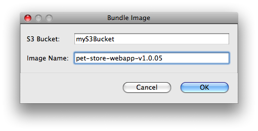

The AWS Toolkit for Eclipse automates the process of bundling AMIs.

Now you should see a new job running in the Progress view. Bundling an instance, uploading it to Amazon S3, and registering the new AMI with EC2 can often take ten or twenty minutes to complete, so be patient.
If you run into problems with your Amazon S3 bucket, make sure you're specifying a valid Amazon S3 bucket that isn't owned by another user.